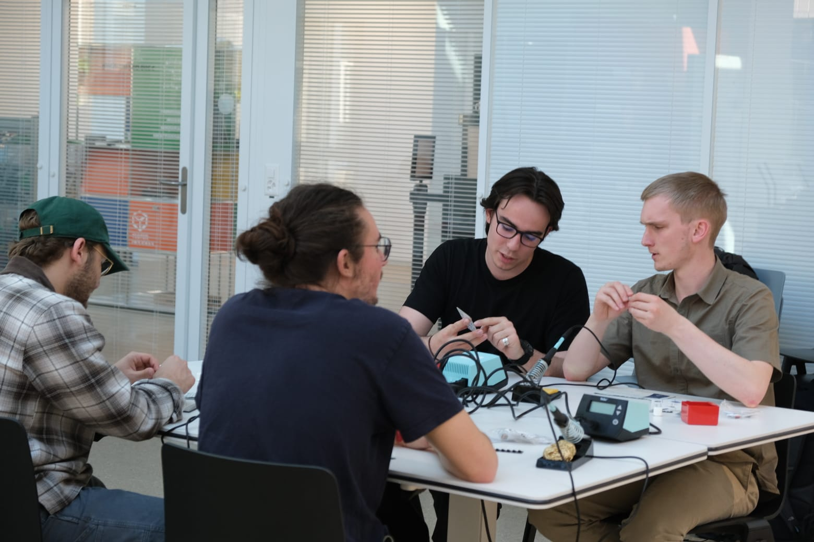
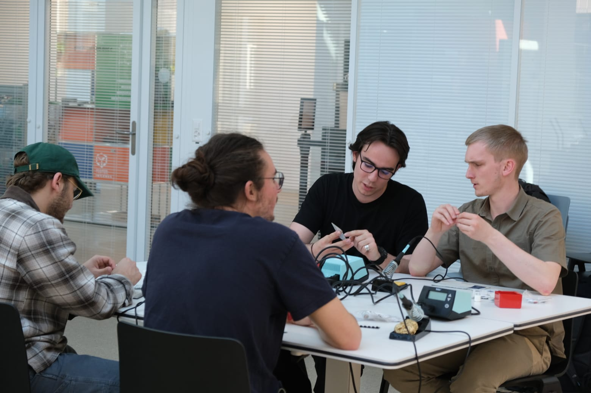

| 3D projects and robots
Nixie Tube Clock
I designed this nixie tube clock using IN-12A nixie tubes,
and I'm really proud of it.
It took me a while to get everything just right,
and I'm currently working on the case.
These tubes, which were first introduced in 1955,
run on 170V and have a beautiful, vintage aesthetic.
 Download code
Download code
Macropad V2
I made a macropad as a kit for my EPFL association, Robopoly.
More info here.
I also organized a workshop for 20 people to build it, which went really well and I'm very happy.
.jpg)


 



Otto Robot
One is equipped with a Bluetooth module to control it with the phone or computer.
I 3D printed the parts and bought the rest online.
Little family 0.0
PC setup
💻 My All-White Setup
- Motherboard: ASUS B650E Max Gaming WIFI
- Case: ASUS TUF GT502 PLUS White
- CPU: AMD Ryzen 5 7600X
- Cooler: NZXT Kraken 240 RGB
- GPU: MSI RTX 4060 VENTUS 2X White OC
- RAM: Crucial Pro DDR5-6000 32GB White
- Storage: WD Black SN850X 1TB
- PSU: Seasonic Focus GX-750 V4 White
- Monitor: Evnia 3000 24M2N3201A
- Keyboard: EPOMAKER x AULA F75
- Mouse: Logitech G502 X
- Headset: Razer Barracuda X
- Keycaps: Womier Jello Pink
Macropad
I made the pcb with Sebou (thx :)). I modeled, and printed the box and keycaps, painted and glued paper on it to. The case is closed with magnets.
I used :
- Components: hot-swap
- Microcontroller: raspberry pi pico
- Switches: Kailh white switches
- Connector: USB-c female
- Hardware: magnets
I also programmed them.

The space between the keys is very large, I would surely make a v2 with leds and different buttons and small screen for a gif. I will try to optimize space.
Heart lamps
https://www.youtube.com/watch?v=3oBN2pKksdo
by Heliox (Youtube)
I followed the tutorial, I still encountered some difficulties but I am happy with the result.
We can change the color of the lamp through the phone. The lamps are synchronized regardless of the distance between them. They are connected to wifi.
Drone FPV
I built an FPV drone. Thanks to Sebastian for supporting me, helping me and teaching me how to do it.
I had some problems in particular because I mounted the ESC and the FC the wrong way around and I reversed the direction of the RX cables(I had to buy another receiver). I forgot to change the motor order on betaflight as I mounted the board wrong. Also I wanted to use an ELRS receiver and transmitter but my radio was not ELRS so I had to buy an external module. But in the end, the drone is flying!!! 🥳
Total : ~1017€ 💸(help I am poor now)
→not including customs fees and repairs
What I used:
- Batteries: 2x CNHL Black Series - 1300mAh 6S 100C
- Safety: Vifly Finder 2 - Autonomous Buzzer
- Wiring: 8mm snakeskin mesh wire 1m
- Propellers: 3x HQProp ETHIX S3 5X3.1X3 - PC - (2x CW + 2xCCW)
- Battery Tester: Tester BX100 de Lipo 1/8S avec alarme
- Power Safety: SwiftFlying - XT30 / XT60 Smoke Stopper
- Storage: DFR Lipo Bag
- Charger: HOTA D6 Pro AC/DC Dual Channel
- Receiver: Happymodel 2.4G ExpressLRS ELRS EP2
- Flight Controller: Skystars - F7 WIFI + KO45 3-6S BLHeli_32
- Frame: LowCULT Frame Kit 5" - CultureFPV
- Motors: 4x Motor Slatts 2306.3 - 1700KV - T-Motor
- Video Transmitter: T-Motor FT200 Racing VTX - MMCX
- Camera: Foxeer Nano Toothless 2 Standard 1200TVL
- Antenna: TrueRC OCP 5.8GHz - MMCX - RHCP
- Accessory: Neck Strap
- TX Module: Happymodel - ExpressLRS ELRS Nano TX Module ES24TX Slim Pro
- Radio: Radiomaster -Zorro- 4in1
- Goggles: SKY04L Skyzone
- Simulator: Liftoff
The most expensive items are the radio and the goggles, the drone itself without counting the repairs is at a fair price.
Forest winch
Our mechanical construction project was to make a drill winch. With Lina, Orjowane and Pauline we created this:


See the 3D, vidéo and annexe:
(download here)
We did the majority of the work together but we divided the tasks as follows:
Pauline and Lina : 2D, calculations
Orjowane : Stop system
Eileen : 3D
Of course we checked each other's work, and I didn't do all the 3D and the others all the calculations, but it was our speciality in a way.
Iron Man Arc Reactor Clock
I followed this tutorial : https://www.thingiverse.com/thing:6063303, by jeje.
Megabot
I tried to do the Megabot in Big Hero 6
- Source: I took the models to print here, by gurol: https://www.thingiverse.com/thing:4839103
- Body Parts: I painted the different part in black
- Head: Painted the head (I am bad at painting as you can see)
- Assembly: Glued the magnets
Girl with a rope
I modeled it on Blender.
I followed this tutorial : https://youtube.com/playlist?list=PLe0O-ypJqvKw6meu68TlU0_motrjcnrva, but didn’t make princess Zelda. I tried to make my own character.
I sculpted it, did the retopology, the rigging, etc…
Now available on Cults: https://cults3d.com/fr/modèle-3d/art/girl-with-a-rope
Toothless
Clown
Made in Blender
I am not entirely satisfied with the result. I need to find time to improve it.
ESP girl
Girl and Kraken
Made in Blender
I wanted to make cloth animation but I couldn’t make the physic. Clothes tore and fell through

Botanical Kit
Allows you to automate plant watering by checking the soil moisutre.
Robopoly is the best association at EPFL.
The photo is not very pretty and I couldn't make one with a plant and the glasses of water because I gave the kit to my motherand forgot to take photos before

Wings
One of my biggest fail but i learned a lot (2022) :/
The plans are nice and work but I was supposed to build the wings. I did but the material choices were terrible! I chose wood, which is too heavy. For the plans I used Fusion 360 and simulate them. The servomotors are placed at the bottom of each wing.
The circuit is very simple.